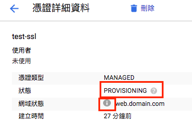

前言
google的load balancer，給我的感覺是此load balancer非彼load balancer，因為呢，GCP的load balancer不限於處理流量的問題，還能處理proxy的問題，我的理解會是nginx，而google cloud也開設這樣的服務，所以是nginx的雲端版，而我這篇文章記錄的主要是proxy pass的部分，真正負載平衡的部分沒有特別設定，但gcp也會auto scale就是了。
成功成果圖：
GCP:load bablancer功能
- proxy pass
- auto scaling
開始前：
- 開好GCP帳號
- 已經用cloud run部署好專案: 還沒的話看這個
- 買好你的專屬domain: 如果不知道的話，我在godaddy買domain
開始：
設定：
到 網路服務 > 負載平衡
建立負載平衡器
選擇HTTP(S)負載平衡
說明：通常網頁開發都是選這個，另外兩個不要問我是什麼，因為我也還沒碰到也還沒研究完QQ。各種設定選項
接下來是重點設定區：
- 後端設定
- 主機與路徑規則
- 前端設定
proxy pass
後端設定
以上選取好就可建立後端服務，一路案建立完成後會回到後端設定的地方，此時可以看到後端服務已經有東西了。
主機與路徑規則
分 簡易型主機與路徑規則＆進階型主機與路徑規則
簡易型就比較單純不用特別設定什麼，但如果想要使用網址重新導向就得使用進階型主機與路徑規則。
網址重新導向的部分可能後面可以再說明一下。
前端設定&完成http建置
- 設定port 80
建立好之後你的專案就會綁定這個IP，不會每次都換成不同IP了。
建立完就可以新建load balancer的專案了，load balancer建立後會需要等待5-10分鐘的時間，你就可以使用IP address進入你的網站了。
你的godaddy網域也需要設定，需要到godaddy DNS裡面把domain指向你的ip，像是這樣（示意圖）。
DNS domain指向你的ip後，TTL時間(1/2小時)後，你就可以使用你買的domain進入你的網站了！
但是現在還有其它問題，就是還是http，我們要改成https。
回到前端設定&完成https建置
- 設定port 443
以上建置完，你必須要等比較久的時間，因為建立憑證的關係，google需要去認證你是否真的擁有這個domain（至於google要怎麼去確認你擁有這個domain又是另一個很長的故事了，這邊先省略）。
因為google並未說明要花多少時間認證，我的經驗是快的話半小時，慢的話一天。認證完成之後你就可以用domain進入到你的網站！
也可以隨時到憑證的設定裡面查看網域狀態，有問題那邊會顯示。
負載平衡首頁下方有進階選項 > 憑證 > 點選你建立的憑證


進階：網址重新導向的問題
為什麼要設定網址重新導向？
以上的設定是沒有防止不安全的進入，如果使用者用ip address or http:// 進入你的網站還是可行的，但我們不想，因為此時的使用者是處於不被https保護的狀態，因此要使用301 redirect，如果使用ip address or http:// 進入網站時 自動301 redirect到https:// 。
建立新的負載平衡器
不需要再設定backend
設定主機與路徑規則：進階型主機與路徑規則
前端設定：用static ip 把port80改開在這
備註：開在原本的port80要先刪掉喔，不然會有衝突
設定完會是這樣：
- gymmy-load-balancer: 只保留443 port
- https: 這裡只放80 port (請忽略我名稱的部分，取名錯誤)
兩者同static ip
成功圖：
如果輸入http:// 進入網站就會出現redirect囉
備註：輸入ip address進入網站也會幫你轉到https喔！
這樣問題就解決了～
(補)auto scaling
補：auto scaling雖然這次沒有特別設定，但想記錄一下他設定的地點在哪邊。
Cloud run > 點選編輯你已經部署的專案 > 最底下自動配置
說明：
- 每個容器的要求數量上限：80 (預設)
- 自動配置：(預設)
- 執行個體數量下限：0
- 執行個體數量上限：100
表示此網站最多可以接受80人同時連線，如果超過80人就會開始長機器，最多可以長到100台機器(80*100人)，如果都沒人連線預設0台(就可能會遇到第一人打開此網站loading時間較長的問題)。
照以上的說明，就可以依照自己的需求去設定了。
心得
寫到一半的時候感受到這篇文章好像會變得又臭又長，但這次因為公司有用，所以也實際遇到很多坑，想一次記下來，不然之後記憶會消失，只能說已經竭盡所能在截圖了。要好好使用一個工具還是要實際去玩過，很多都是摸出來的，太多細節很難找到文章有說明。
上一篇文章：用Goole build和Google run來部屬你的專案
資料參考：
大架構的概念與程式設計－－（三）Load Balance（又叫分流、負載平衝）設計
如何透過 GCP HTTP(S) Load Balancing 來實現 HTTP Redirect HTTPS
使用 Nginx 做 Load Balancer
Choosing the right load balancer in Google Cloud